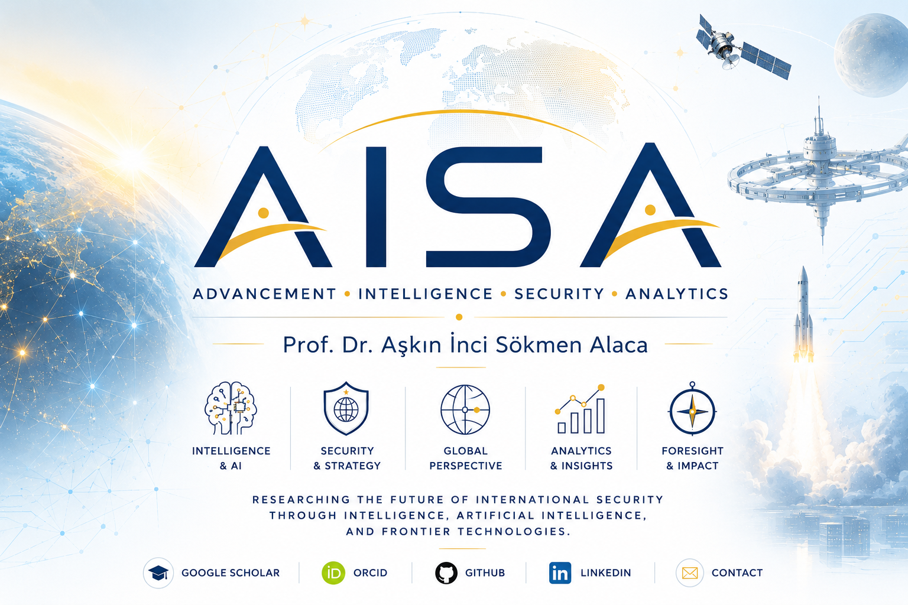

Intelligence Studies
Strategic intelligence, OSINT, cognitive security, intelligence governance and decision intelligence.

Artificial Intelligence · Intelligence Studies · International Security · Space Security · Frontier Technologies
Researching the intersection of technology, security, governance, intelligence and the future of human systems.
Contact: askin@aisaresearch.org
Strategic intelligence, OSINT, cognitive security, intelligence governance and decision intelligence.
AI governance, agentic AI, generative AI, human–AI collaboration and AI security.
Strategic intelligence, OSINT, cognitive security, intelligence governance and decision intelligence.
Security studies, frontier geopolitics, strategic competition, hybrid warfare and national resilience.
Orbital security, planetary defense, space governance, human exploration and space medicine.
Radicalization, women terrorists, child soldiers, counterterrorism and security policy.
Nuclear governance, deterrence, signaling, non-proliferation and strategic stability.
Neurotechnology, organoid intelligence, synthetic biology, genetics, human enhancement and biosecurity.
Climate intelligence, environmental security, disaster intelligence, water security and resilience.
Enterprise architecture, cloud governance, digital infrastructure, data and algorithmic governance.
Safety leadership, corporate governance, AI leadership, organizational resilience and change.
Military AI, autonomous systems, swarm warfare, multi-domain operations and strategic technologies.
China's foreign and security policy, Indo-Pacific geopolitics, strategic competition, regional security, technology competition and emerging security dynamics.
Quantum, neuromorphic, photonic, molecular, DNA and post-silicon computing.
Selected research on Indo-Pacific geopolitics, China–U.S. strategic competition, Taiwan, Vietnam, Singapore, regional security, counterterrorism and cybersecurity.
2022 · Book Chapter
Global Maritime Geopolitics, eds. Hasret Çomak, Burak Şakir Şeker & Mehlika Özlem Ultan, Transnational Press London, pp. 75–91.
2021 · Book Chapter
Vietnam Studies in Türkiye I, ed. Merthan Dündar, Ankara University Center for Asian Studies, pp. 215–233.
2021 · Book Chapter
Security Issues in the Context of Political Violence and Terrorism of the 21st Century, eds. Hasan Acar & Halil Emre Deniş, Cambridge Scholars Publishing, pp. 195–217.
2020 · Book Chapter
Taiwan Studies in Türkiye II, ed. Merthan Dündar, Ankara University Center for Asian Studies, pp. 105–131.
2020 · Book Chapter
Singapore Studies in Türkiye I, eds. Merthan Dündar & Cenker Göker, Ankara University Center for Asian Studies, pp. 15–45.
2020 · Book Chapter
The New Global Threat: Cyberattacks, Security and Policy Applications, ed. Fulya Köksoy, Nobel Publishing, pp. 283–301.
2020 · Book Chapter
Global Policies and Regional Transformations, ed. Fulya Köksoy, Nobel Publishing, pp. 3–25.
2019 · Book Chapter
Global and Regional Powers Relations: Problems and Issues in the 21st Century, Peter Lang, Germany, pp. 249–275.
Selected research on neuroscience, neurotechnology, nanotechnology, genetic engineering, synthetic biology, human enhancement and biosecurity.
2026 · Conference Presentation
Artificial intelligence, synthetic biology and emerging biosecurity challenges.
2023 · Conference Presentation
Genetic technologies, eugenics and their implications for security and future warfare.
2024 · Research / Analysis
Genetic engineering, animal modification and emerging biotechnology.
2023 · Presentation
Genetic modification of animals and its implications for security and warfare.
2021 · Research
Neurosecurity, directed-energy technologies and emerging security threats.
2024 · Research / Presentation
Nanotechnology, neuroscience and emerging applications in the security domain.
Research / Analysis
Emerging technologies and their implications for new security threats.
Research / Analysis
Smart dust, nanotechnology, sensing systems and emerging security implications.
2023 · Conference Presentation
Human enhancement, transhumanism and the transformation of the military domain.
Fikir Turu · Science & Technology
Artificial intelligence, neurotechnology, mind control and emerging questions of responsibility and security.
Selected research on intelligence, strategic intelligence, security, emerging technologies and human factors.
2023 · Research / Analysis
Strategic intelligence, China and contemporary security dynamics.
2025 · Research / Analysis
Emotional intelligence, human factors, decision-making and security.
2026 · Research / Analysis
Intelligence, covert influence, emerging technologies and contemporary security.
2023 · Conference Presentation
Intelligence, emerging technologies and the transformation of warfare in Ukraine.
Research monographs on military weapon technologies in outer space.
Read publication →AI policy, digital leadership and governance-related professional engagement.
Visit platform →Analysis on space security, international security, emerging technologies and future warfare.
International discussions on AI, security, ethics and outer space security.
Space security and strategic technology workshops.
Open research projects including AISA Research and Open-Agent Governance Framework.
Open GitHub →Selected work and professional engagement on artificial intelligence, policy, governance and digital transformation.
Visit AI Policy Lab →Analysis and commentary on defence, space security, emerging technologies and future warfare.
Visit Global Savunma →
Devlet Kontrolündeki Eski Uzay’dan Özel ve Ticari Yeni Uzaya
5 June 2020
ABD-Çin Rekabeti Uzaya Yayılıyor
4 August 2020
Milyarderlerin Yeni Uzay Rekabeti
4 August 2021
Türkiye Yenilikçi Teknoloji ve İnovasyonla Uzaya Gidiyor
17 February 2021
Türkiye Yeni Nesil Uydularıyla Uzay Gücü Olma Yolunda
17 January 2021
For academic collaboration, invited talks, policy research and international projects.